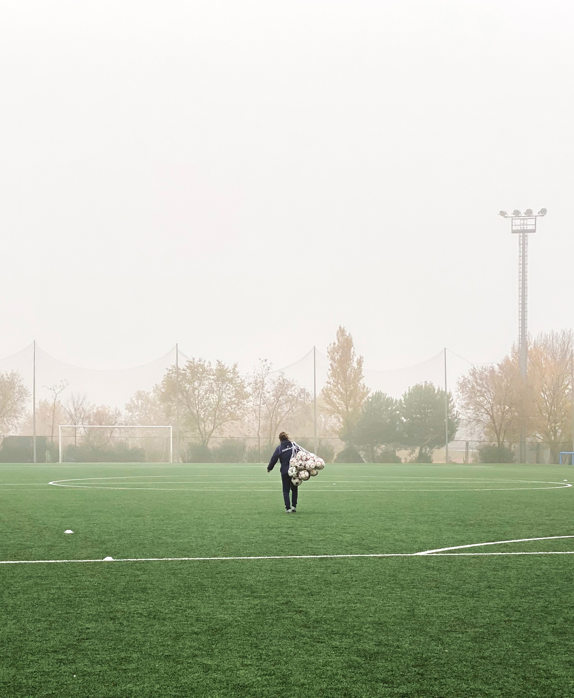

HIGH PERFORMANCE CUSTOMIZED
TECHNICAL TRAINING
FOR THE ELITE PLAYER
About Coach Sinclair
Coach Sinclair has a vast experience at all levels of the game including High Performance Soccer,
working in the NCAA, OUA, Oakville Soccer Club, Director of Coaching from u7-u8, in the OPDL with SC Toronto,
as their OPDL High Performance Manager and currently with Whitby FC, as their OPDL BU17 Coach and League 1 Reserves U21.
Sinclair has extensive coaching background having served as assistant coach and recruiting coordinator with the University of Toronto women's soccer program.
Ian previously served as an assistant coach with the McMaster Marauders men's soccer team from 2008-12, capturing OUA championships in 2009 and 2011.
Sinclair was also an assistant with the Buffalo State College men's program NCAA, The State University of New York (Men) in 2005 and Brock University in 2004.